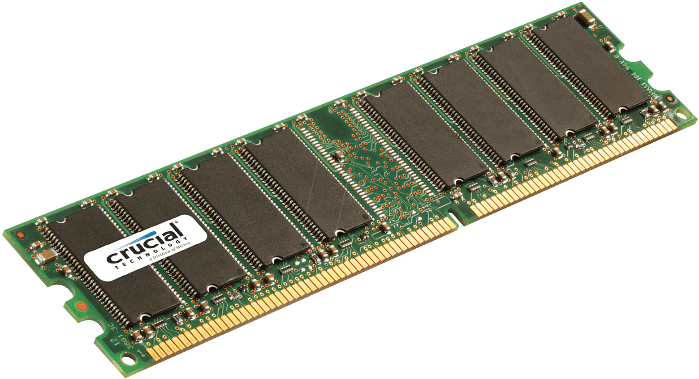

|
|
| FORM PEMBELIAN KOMPUTER DISINI!! |
RAM DDR2
|
RAM (Random Access Memory) DDR2 adalah jenis memori komputer yang berfungsi sebagai tempat penyimpanan data sementara untuk mempercepat akses data oleh CPU. DDR2 merupakan singkatan dari Double Data Rate 2, generasi kedua dari teknologi DDR yang memungkinkan transfer data dua kali per siklus clock, yang membuatnya lebih cepat dibandingkan generasi pendahulunya, DDR1. DDR2 memiliki kecepatan yang lebih tinggi dan konsumsi daya yang lebih rendah karena beroperasi pada tegangan 1,8V, lebih rendah dibandingkan DDR1 yang menggunakan 2,5V. Dengan kecepatan transfer data yang mencapai 400-1066 MT/s (million transfers per second), DDR2 menjadi pilihan umum pada perangkat komputer pada masanya, terutama di era pertengahan tahun 2000-an. Namun, meskipun DDR2 lebih cepat dari DDR1, jenis RAM ini tidak kompatibel dengan motherboard yang hanya mendukung DDR atau generasi selanjutnya seperti DDR3 atau DDR4. Hal ini disebabkan perbedaan desain fisik dan spesifikasi arsitektur antar generasi RAM. Seiring perkembangan teknologi, DDR2 mulai digantikan oleh RAM generasi lebih baru seperti DDR3 dan DDR4 yang menawarkan kecepatan lebih tinggi, konsumsi daya lebih rendah, dan kapasitas yang lebih besar. Saat ini, DDR2 lebih jarang digunakan dalam komputer modern karena keterbatasannya dalam hal performa dan efisiensi energi dibandingkan RAM generasi terbaru. |
 |